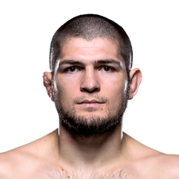

-

Khabib Nurmagomedov, ex-campeão peso-leve do UFC, é conhecido por sua invencibilidade e habilidades de luta agressivas. Sua origem na Dagestão, Rússia, e estilo de luta sambo o tornaram uma lenda das artes marciais mistas. Aposentou-se com um recorde de 29-0, destacando-se como um dos maiores lutadores de todos os tempos.
-

Conor McGregor, lutador irlandês do UFC, é famoso por seu carisma e estilo de luta agressivo. Conhecido por sua língua afiada e conquistas no MMA, ele se tornou uma das maiores estrelas do esporte, impulsionando o UFC a novos patamares de popularidade.